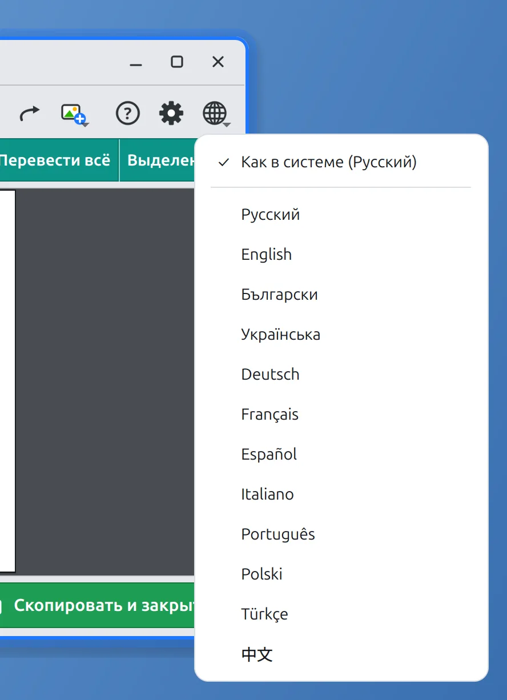
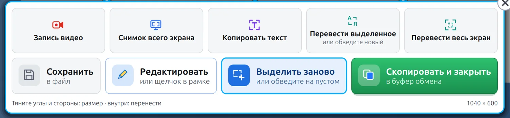
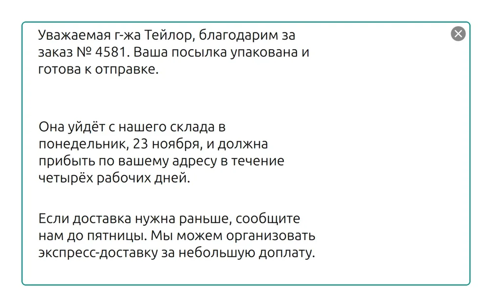
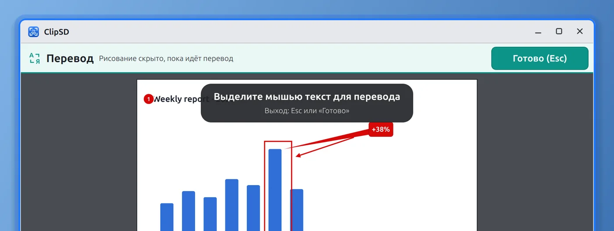
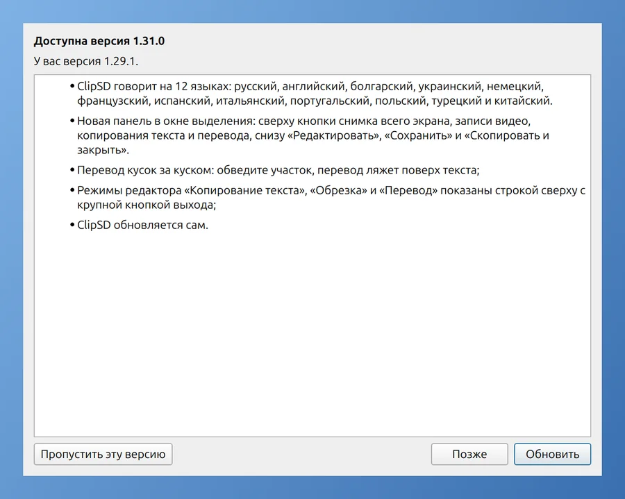

История версий
Версия 1.31.0
вышла
- ClipSD говорит на 12 языках: русский, английский, болгарский, украинский, немецкий, французский, испанский, итальянский, португальский, польский, турецкий и китайский. Язык меняется сразу, без перезапуска: меню значка у часов, глобус в редакторе, первый шаг знакомства или настройки.

- Новая панель в окне выделения: сверху кнопки снимка всего экрана, записи видео, копирования текста и перевода, снизу «Редактировать», «Сохранить» и «Скопировать и закрыть».

- Перевод кусок за куском: обведите участок, перевод ляжет поверх текста; обведите следующий, он тоже переведётся. Esc завершает режим.

- Режимы редактора «Копирование текста», «Обрезка» и «Перевод» показаны строкой сверху с крупной кнопкой выхода; Esc возвращает прежний инструмент.

- ClipSD обновляется сам. Раз в сутки проверяет, есть ли новая версия, и предлагает «Обновить», «Позже» или «Пропустить эту версию». Проверить сразу: меню значка, «Проверить обновления». Обновление проверяется цифровой подписью; если новая версия не запустилась, возвращается прежняя.
